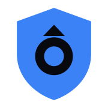
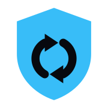

Each row: 180 px master · 32 px (browser tab) · 16 px (smallest favicon) · light-bg tab. Verdicts reflect the latest legibility + risk scan (commodity / political / anatomical / brand-collision).
www/logo-shield.svg right now.

180
180